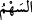

kabul edilmeyeceğine dair sahih haber vârid olmuştur. En aşağı tabakada olan bir köle,
zelle ve hatasından dolayı böyle yakalanıp cezalandırılırsa en üst tabakada olan bir
peygamberin hali nicedir!
“__WORD__ içerisinde insan, hayvan ve eşya bulunan gemiye denir. Kâmûs’da der ki:
Tam teçhizatlı hazır ve donanımlı gemiye de “__WORD__ denilir.
Rivâyete göre Yûnus (a.s.) gemiye binince gemi sahilden ayrıldı ve biraz yol alıp
denizi ortalayınca durdu. Gemiciler ve kaptanlar: “Gemide efendisinden izinsiz olarak
yola çıkmış kaçak köle var. Bu gemide kaçak köle olunca gemi gitmez” dediler. İmam
der ki, gemiciler “İçinizde âsi biri var. Yoksa rüzgar, fırtına, ârıza gibi zâhiri bir sebep
olmaksızın şu an müşâhede ettiğimiz bu durum hâsıl olmaz.” dediler. Yolculardan esnaf
ve tüccar olanlar: “Biz bunu denedik. Böyle bir şey gördüğümüzde kur’a atıyoruz.
Kur’a kime çıkarsa onu denize atıyoruz. Zira bir kişinin boğulması bütün yolcuların
boğulmasından daha iyidir” dediler. Bu söz üzerine yolcular arasında üç kere kur’a
çekildi. Her defasında kur’a Yunus (a.s.)’a çıktı. Allah Teâlâ şöyle buyuruyor:
141. Gemide olanlarla karşılıklı kur’a çektiler de kaybedenlerden oldu.
“Gemide olanlarla karşılıklı kur’a çektiler de” Yunus (a.s.), kur’ada
“kaybedenlerden oldu.”
“__WORD__ kelimesi, karşılıklı kura çekmek demektir. “__WORD__ ise kur’a için atılan ok ve
benzeri şeylerdir. “__WORD__ zafer ve galibiyet makamından kaymak demektir. Kâmûs’ta
der ki:
“
”
yani “ayağı kaydı, güneş battı, huccet bâtıl oldu” denilir. “__WORD__, delili bâtıl olmak
demektir. Kura Yunus (a.s.)’a çıkınca Yunus (a.s.): “Kaçak köle benim! yahut “Ey ahali!
Ey gemi yolcuları! Vallahi âsî benim!” dedi. Elbisesine bürünüp güverteye çıktı ve
oradan denize atladı. Yani, Yûnus (a.s.) kilimi başına çekip kendisini denize attı.
142. Yunus kendini kınayıp dururken onu bir balık yuttu.
“Yunus kendini kınayıp dururken onu” büyük “bir balık yuttu.”
“__WORD__ lokma edip yutmak demektir. “__WORD__ denilir. “Onu yuttum”